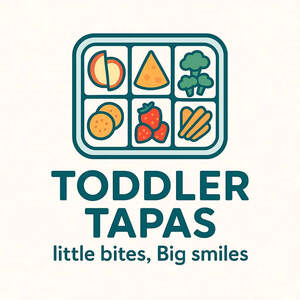

Trade Mark Journal No.2025/049 5 December 2025
UK00004300996 26 November 2025 (29,30)

- Class 29
- Potato snacks; Candied fruit snacks; Milk-based snacks; Coconut-based snacks; Soy-based snack foods; Potato-based snack foods; Cheese-based snack foods; Fruit-based snack food; Fish-based snack food; Meat-based snack food; Nut-based snack foods; Vegetable-based snack foods; Tofu-based snack food; Vegetable-based snack food; Snacks of edible seaweed; Dried fruit-based snacks; Sweet corn-based snack foods; Snack foods based on vegetables; Snack foods based on legumes; Snack foods based on nuts; Organic nut and seed-based snack bars; Potato crisps in the form of snack foods; Snack mixes consisting of processed fruits and processed nuts; Snack mixes consisting of dehydrated fruit and processed nuts.
- Class 30
- Tortilla snacks; Crispbread snacks; Cheese curls [snacks]; Fruit cake snacks; Puffed corn snacks; Rice cake snacks; Extruded wheat snacks; Rice-based snack food; Cereal-based snack food; Wheat-based snack foods; Corn-based snack foods; Multigrain-based snack foods; Flour based snack foods; Flour based savory snacks; Snacks manufactured from muesli; Extruded snacks containing maize; Cereal-based savoury snacks; Corn-based savoury snacks; Snack foods made from wheat; Snack foods made from corn; Snack foods prepared from maize; Cheese flavored puffed corn snacks; Puffed cheese balls [corn snacks]; Snack foods made of whole wheat; Cereal snack foods flavoured with cheese; Snack food products consisting of cereal products; Snack food products made from cereal flour; Snack foods made from corn and in the form of rings; Snack foods made from corn and in the form of puffs; Ready to eat savory snack foods made from maize meal formed by extrusion.
Alistair Watson-Sparrow
Representative: GCS Europe Ltd